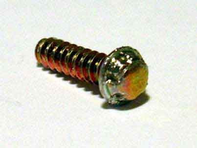

Faça sua propria Gamebit!!!
 :::. Por Gigacom - Os consoles da Nintendo são verdadeiras pérolas de tão bem feitos que são. Porém, desde o SNES a Nintendo resolveu usar um parafuso diferente para literalmente lacrar seus consoles. Esse parafuso é conhecido como Gamebit, e exige uma chave especial para manuseá-lo. Aliás, exigia hehehe. Aprenda agora como fazer a sua propria chave Game bit!
:::. Por Gigacom - Os consoles da Nintendo são verdadeiras pérolas de tão bem feitos que são. Porém, desde o SNES a Nintendo resolveu usar um parafuso diferente para literalmente lacrar seus consoles. Esse parafuso é conhecido como Gamebit, e exige uma chave especial para manuseá-lo. Aliás, exigia hehehe. Aprenda agora como fazer a sua propria chave Game bit!
__________________________________________________________________
fonte das imagens: mmmonkeys
O parafuso Gamebit originalmente foi usado pela Nintendo para impedir que crianças abrissem seus consoles e fizessem alguma besteira. O ruim é que se o console apresentar algum defeito, o dono estará automáticamente obrigado a ir numa autorizada Nintendo para resolver o problema. Mas o que fazer com um Super Nintendo ou N64 por exemplo, que nem assistência técnica tem mais? De duas ao menos uma: ou o sujeito gasta uma grana comprando uma chave Gamebit, ou então improvisa uma. Aqui vou mostrar duas formas de se fazer uma "Gamebit", a primeira você não deverá gastar nem sequer miseros R$ 0,50. Para isso você precisará:
1 tubo de caneta Bic
Esqueiro, vela ou o fogão da sua mãe/esposa/namorada/vizinha
Um console da Nintendo que possua um parafuso Gamebit
1º Passo - Pegue a ponta da caneta Bic e amoleça-a usando uma chama. A dica aqui é não expor o tubo em cima da chama, apenas aproxime a ponta até o fogo, assim ela amolecerá e não ficará preta ou exessivamente quente. Note que é apenas para amolecer o material, e não derreter! Tambem particularmente recomendo usar uma vela, pois assim você ficará com uma mão livre.
2º Passo - Com a ponta do tubo amolecida e ainda quente, pressione-a em cima da cabeça do parafuso de um parafuso Gamebit. Você pode inserir o tubo dentro daqueles buracos onde estão os parafusos no console, só é preciso tomar cuidado para não encostar a ponta nas laterais do console. Depois de pressionar bem em cima do parafuso, espere um pouco até o tubo se resfriar e solidificar. Ah, não precisa ficar preocupado em deixar a ponta encostar nas laterais do buraco, você deve apenas evitar isso. Se encostar, não tem problema, pois depois que o plástico do tubo solidifica, ele solta facil das laterais do buraco e tambem do parafuso. Abaixo, um exemplo mostrado num parafuso Gamebit:
Prontinho, simples não? Esses tubos servem para desparafusar e parafusar um bocado de vez, mas sempre é bom preparar mais de um desses tubos.
O segundo modo de se fazer uma chave Gamebit, é usando uma chave de fenda. Para isso, você irá precisar obviamente de uma chave de fenda com ponta que não seja muito grande, de preferência da mesma largura do parafuso, e tambem precisará de uma lima. É bem trabalhoso, mas costuma ficar bom. Pegue a ponta da chave de fenda, e com a lima faça um buraco no meio dela conforme mostra a foto abaixo:
A diferença do tamanho das salienças das chave nessa foto, se deve ao fato de uma delas, a menor, ser usada para abrir os cartuchos de N64/NES/Snes e a outra os consoles. A vantajem dessa técnica é que uma chave de metal obviamente durará muito mais que a improvisada com um tubo de caneta.
É isso amigos, duvidas, sugestões declarações de amor, já sabem, só postar lá no Trombone.
Acesse o Trombone e comente sobre essa matéria!


O Master System 3 foi mais fatiado que carne de segunda antes de ser moída... tiraram o suporte ao óculos 3D, colocaram uma travinha meio vagabunda para servir de liga/desliga, sumiram com o botão reset e com as saídas A/V... ...